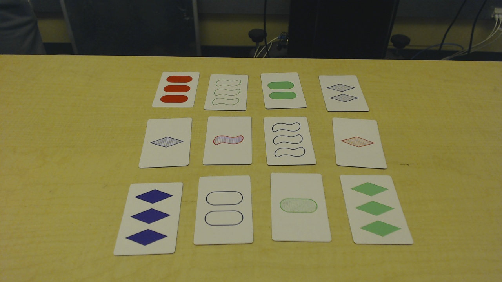
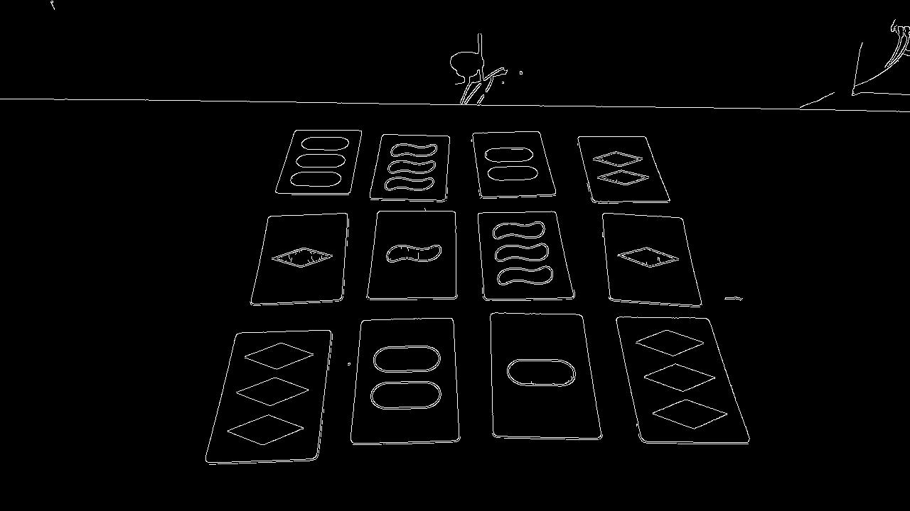
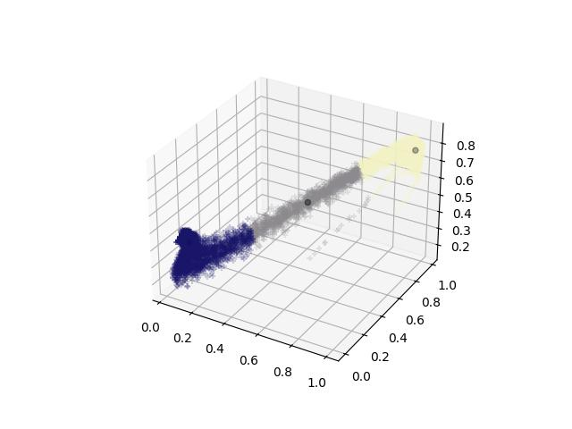
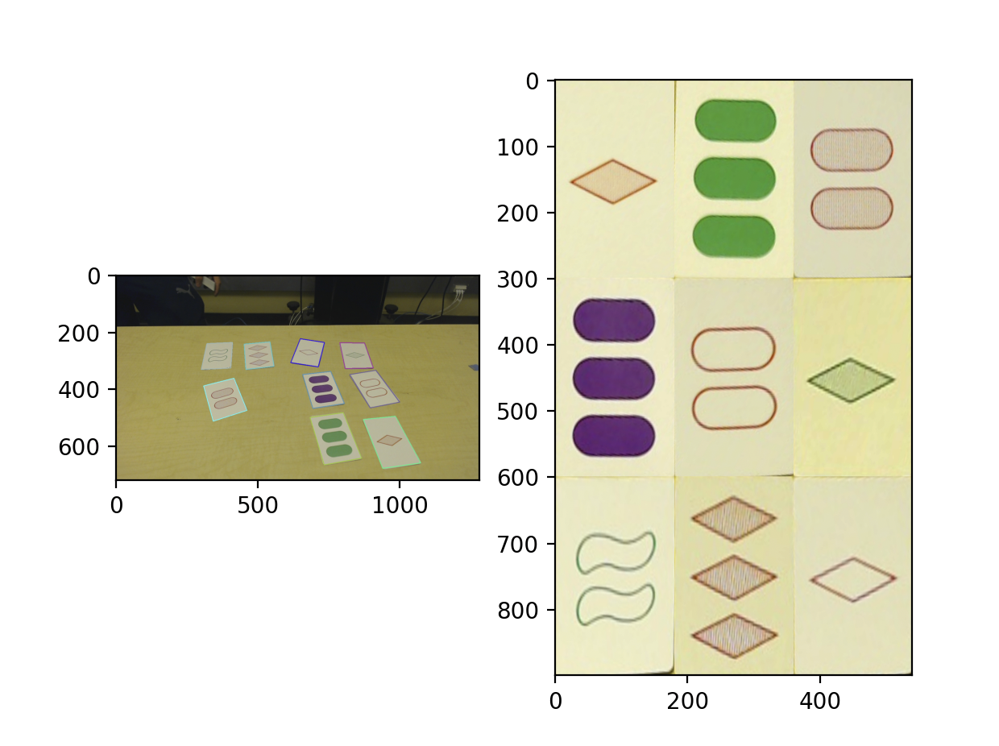
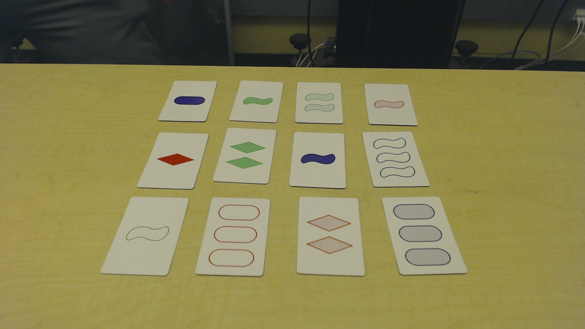
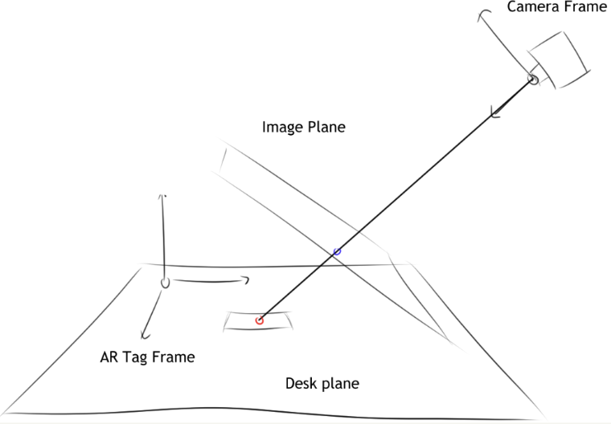
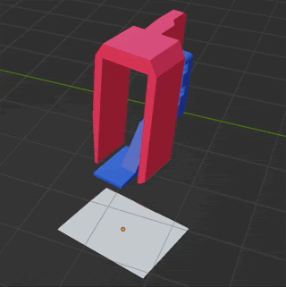
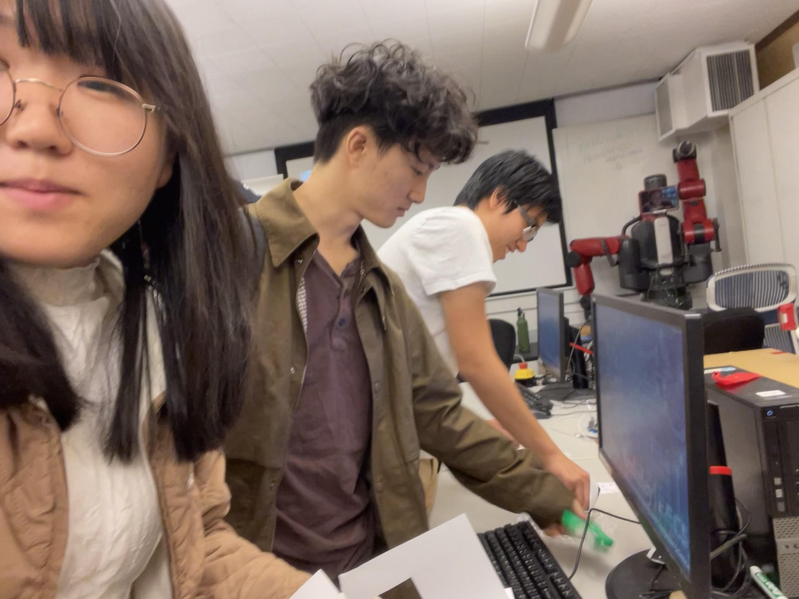
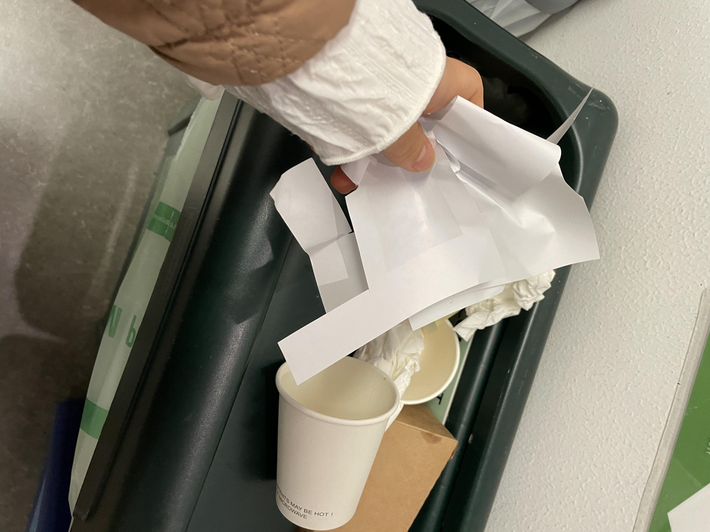

Here is an architecture that maps out how the robot's nodes communicate with each other.
The set_robot node acts as a controller. It runs the game loop, and calls services that operate each module of the robot. The vision node processes the image obtained by the camera, isolates the cards in the image, then cleans and processes them. It then returns the coordinates of the centers of each card in the set in AR tag coordinates. sawyer_full_stack is responsible for providing sevices involving path planning and trajectories.
The main role fo the controller is to call the vision node to get card positions, then move the cards using the sawyer_full_stack node. A human interacts with the robot through the command line. The trajectories that it finds are reported through RViz and the human operator must confirm the safety of the trajectory before the robot can move. The general loop is as follows:
sawyer_full_stack node.The robot's first task is to find the set in the first place. It first takes an image of the set board. Then, we use a Canny filter to find edges in the image. This produces a binary image we can then use to find contours.
|

|

|
|

|
The set of contours we find is very noisy. We first filter for closed contours such that the remaining contours are guaranteed to form polygons. Then, we use cv2.approxPolyDP to approximate each polygon to a quadrilateral. Finally, in order to filter out the shapes in the images themselves, we filter contours based on polygon size. The result is that we're able to have contours only representing the card edges.
The camera is placed at an angle to the table. As a result, the pespective of the cards is warped, foreshortened towards the back. We use rectification to fix this issue. We use the corners of each quadrilateral as correspondence points to a rectified quadrilateral that is predefined in both size and shape. We approximate the length of each edge in perspective in order to find the correct correspondence points. We then compute a homography matrix and perform an inverse warp to get the rectified card images.
|

|
The next step after rectification is classification. We used a neural network to classify cards. In order to increase the robustness of our neural network, we made the following preprocessing steps.
The dataset we used for both training and validation was taken manually. In order to more easily take data, we had one person set up cards and one person verify that the cards were in frame and use a python script to take a snapshop of the cards using the Logitech camera.
|

|
In comparison to most supervised learning datasets, our dataset was quite small, so it was augmented through various transformations.
We used PyTorch for the NN's backend, with the following structure:
We used a batch size of 65, initial learning rate of 0.0001, learning decay of 0.98, and 200 epochs.
At this point, we have all the information we need except for the positions of the cards themselves. We compute this based on the information we have; that is, we know the camera intrinsics, the camera frame, the size of the AR tag, as well as the AR tag frame. A schematic is depicted below.
|

|
We can get the camera-to-AR tag matrix using tf2. Since we know the image coordinate and the location of the origin of the camera coordinate frame, we can also compute the unit ray is created between them. Then, we intersect the ray with the AR tag's $xz$ plane with the following equation:
Where $\vec{o}$ is origin of the ray, $\vec{d}$ is the direction, $\vec{p_0}$ is a point on the AR tag plane, and $\vec{n}$ is a unit vector normal to the plane. All calculations are done in the camera frame — we convert to the AR tag frame at the very end.
Our goal is to pick and place the three cards that we got from the vision service. We set a default pose, move to a card, move back to the default pose, then loop until we have picked and placed all three cards. We use PID for error correction. This is all taken care of by the sawyer_full_stack service.
Picking up cards with the regular Sawyer gripper is infeasible — we designed a custom gripper of our own.
|

|
The gripper was designed in Blender and 3D printed. The smaller piece has a piece of tape attached to the end, allowing the card to stick to it. When we want to drop a card, we move the gripper to the closed position so that the wings on the other piece of the gripper push down on and release the card from the tape.
To solve set, we simply assign a value 1, 2, or 3 to each variation. For each possible set, if the sum of the values modulo 3 is 0, then we know it is a valid set. We repeat this for all permutations — this algorithm is constant time because there is an upper bound on the number of cards in play.
Our project achieved all the goals we set for it. Further improvements would be to remove the human element of replacing cards, which is just a matter of adding more waypoints. Our initial design of the gripper used a suction cup instead of tape, which was not effective for grabbing cards. We also considered many white balancing algorithms, such as contrast stretching and grayworld assumption, but the k-means strategy worked the best.
In terms of difficulties, the main two that we ran into were glare caused by lights turned on in a room opposite from the lab and the gripper not reliably picking up cards with the original gripper. The solutions we came up with could be considered temporary — we used tape instead of a suction cup and piece of foam, and we used cardboard to cover the windows and improve the lighting conditions.
|

|

|